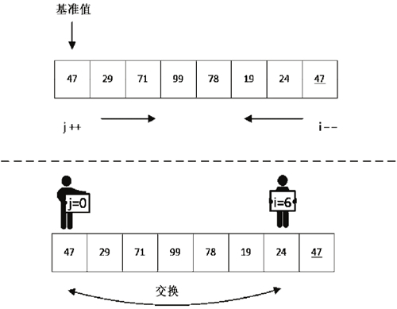

冒泡排序
冒泡排序的概念
冒泡排序的英文Bubble Sort，是一种最基础的交换排序。之所以叫做冒泡排序，因为每一个元素都可以像小气泡一样，根据自身大小一点一点向数组的一侧移动。
冒泡排序的原理
每一趟只能确定将一个数归位。即第一趟只能确定将末位上的数归位，第二趟只能将倒数第 2 位上的数归位，依次类推下去。如果有 n 个数进行排序，只需将 n-1 个数归位，也就是要进行 n-1 趟操作。
而”每一趟”都需要从第一位开始进行相邻的两个数的比较，将较大的数放后面，比较完毕之后向后挪一位继续比较下面两个相邻的两个数大小关系，重复此步骤，直到最后一个还没归位的数。
冒泡排序的特点及性能

由上图可知，4 个石子的时候排完序需要 3 趟，第一趟需要比较3次，第二趟需要比较2次，第三趟需要比较1次，那一共比较了 3 + 2 + 1 次；
那如果有 n 个石子呢？
那就需要 (n-1) + (n-2) +…+2+1 次，这不就是一个等差数列吗，很显然：

根据复杂度的规则，去掉低阶项（也就是 n/2）,并去掉常数系数，那复杂度就是 **O(n^2)**了；
冒泡排序也是一种稳定排序，因为在两个数交换的时候，如果两个数相同，那么它们并不会因为算法中哪条语句相互交换位置。
对于冒泡排序，我们应该对它的思想进行理解，作为排序算法学习的引导，让我们的思维更加开阔。
虽然
冒泡排序在我们的实际工作中并不会用到，其他排序算法多多少少比冒泡排序算法的性能更高，但是我们还是要掌握冒泡排序的思想及实现，并且在面试时还是有可能会用到。
冒泡排序的实现
冒泡排序原始版
1 | //按照刚才那个动图进行对应 |
冒泡排序优化版
1 | void bubbleSort(vector<int>& vec){ |
快速排序
快速排序的概念
快速排序是对冒泡排序的一种改进
快速排序的==基本思想==是：通过一趟排序将要排序的数据分割成独立的两部分，其中一部分的所有数据比另一部分的所有数据要小，再按这种方法对这两部分数据分别进行快速排序，整个排序过程可以递归进行，使整个数据变成有序序列。
快速排序的原理
排序算法的思想非常简单，在待排序的数列中，我们首先要找一个数字作为基准数（这只是个专用名词）。为了方便，我们一般选择第 1 个数字作为基准数（其实选择第几个并没有关系）。接下来我们需要把这个待排序的数列中小于基准数的元素移动到待排序的数列的左边，把大于基准数的元素移动到待排序的数列的右边。这时，左右两个分区的元素就相对有序了；接着把两个分区的元素分别按照上面两种方法继续对每个分区找出基准数，然后移动，直到各个分区只有一个数时为止。
这是典型的分治思想，即分治法。下面我们对一个实际例子进行算法描述，讲解快速排序的排序步骤。
以 47、29、71、99、78、19、24、47 的待排序的数列为例进行排序，为了方便区分两个 47，我们对后面的 47 增加一个下画线，即待排序的数列为 47、29、71、99、78、19、24、47。
首先我们需要在数列中选择一个基准数，我们一般会选择中间的一个数或者头尾的数，这里直接选择第 1 个数 47 作为基准数，接着把比 47 小的数字移动到左边，把比 47 大的数字移动到右边，对于相等的数字不做移动。所以实际上我们需要找到中间的某个位置 k，这样 k 左边的值全部比 k 上的值小，k 右边的值全部比 k 上的值大。
接下来开始移动元素。怎么移动呢？其实冒泡排序也涉及对元素的移动，但是那样移动起来很累，比如把最后一个元素移动到第 1 个，就需要比较 n-1 次，同时交换 n-1 次，效率很低。其实，只需把第 1 个元素和最后一个元素交换就好了，这种思想是不是在排序时可以借鉴呢？之前说快速排序就是对冒泡排序的一个改进，就是这个原因。
快速排序的操作是这样的：首先从数列的右边开始往左边找，我们设这个下标为 i，也就是进行减减操作（i–），找到第 1 个比基准数小的值，让它与基准值交换；接着从左边开始往右边找，设这个下标为 j，然后执行加加操作（j++），找到第 1 个比基准数大的值，让它与基准值交换；然后继续寻找，直到 i 与 j 相遇时结束，最后基准值所在的位置即 k 的位置，也就是说 k 左边的值均比 k 上的值小，而 k 右边的值都比 k 上的值大。
所以对于上面的数列 47、29、71、99、78、19、24、47，进行第 1 趟第 1 个交换的排序情况如下，第 1 次的操作情况如图 1 所示。
 图 1 第 1 次发现可以交换的数(图片来自网络)
交换之后，j 移动到了下标为 6 的位置，对 i 继续扫描，如图 2 所示。

图 2 第 2 次发现可交换的值(图片来自网络)
此时交换后的数列变为 24、29、47、99、78、19、71、47。接下来我们继续对 i、j 进行操作，如图 3 所示，继续进行 i– 及 j++ 的比较操作。

图 3 继续进行 i 与 j 的移动(图片来自网络)
进行了这两次 i、j 的移动、比较、交换之后，我们最终得到的数列是 24、29、19、47、78、99、71、47。接下来我们继续进行 i– 的操作，发现在 i 为 4 时比 47 大不用交换，在 i 为 3 时与 j 相遇，这时就不需要继续移动、比较了，已经找到 k 了，并且 k 的值为 3。我们可以确认一下当前的数列是不是 k 左边的值都比 47 小，而 k 右边的值都比 47 大（由于要保持相对位置不变，所以 47 同样在基准值 47 的右边）。
47 这个值已经落到了它该在的位置，第 1 趟排序完成了。接下来就是以 k 为基准，分为两部分，然后在左右两部分分别执行上述排序操作，最后数据会分为 4 部分；接着对每部分进行操作，直到每部分都只有一个值为止。
接下来进行第 2 趟排序，现在左边部分为 24、29、19，我们选择第 1 个数 24 作为基准数，接着进行 i–、j++ 的操作，我们发现 i 最初的值为 19，比 24 这个基准值小，所以与基准值进行交换，得到的数列为 19、29、24；当 j 为 1 时，我们发现 29 比 24 大，所以与基准值进行交换，得到的数列 19、24、29，此时 i 为 2，j 为 1；继续 i– 时发现 i 为 1，与 j 相遇，左边部分的数列的 k 为 1，并且左右两部分分别只有一个元素，此时第 2 轮排序的左边部分的排序结束，同时左边部分的所有数据都排序完成。
我们接着看右边部分的排序，待排序的数列为 78、99、71、47，我们同样选择第 1 个值 78 为基准值，接下来进行 i 与 j 的移动与比较，发现 47 比 78 小，进行交换，得到的数列 47、99、71、78；从左往右发现 99 比基准值 78 大，进行交换，得到的数列为 47、78、71、99；继续从右向左看，发现 71 比基准值 78 小，进行交换，得到的数列为 47、71、78、99。此时 i 在整体数组中的下标为 6，j 为 5，若继续 j++ 则与 i 相遇，所以完成此轮排序。
此时右边数列的 k 为 6，一般会是相遇的位置，也就是基准值所在的位置，这时数列又被分为两部分，左边是 47、71，右边是 99，需要继续对左边部分的数据进行排序，虽然只有两个数据，但我们还是继续按照快速排序的思想操作一下，选择 47 作为基准数，将i进行从右向左的移动、比较，发现 i 与 j 相等时没有产生移动，完成第 2 轮排序。
至此，所有排序都已经完成，最终数列的结果是 19、24、29、47、47、71、78、99。实际上，快速排序的每一轮处理其实就是将这一轮的基准数归位，直到所有的数都归位为止，排序就结束了。
要注意 ： 当基准数选择最左边的数字时，那么就应该先从右边开始搜索；当基准数选择最右边的数字时，那么就应该先从左边开始搜索。不论是从小到大排序还是从大到小排序！
快速排序的特点及性能
快速排序之所比较快，因为相比冒泡排序，每次交换是跳跃式的。每次排序的时候设置一个基准点，将小于等于基准点的数全部放到基准点的左边，将大于等于基准点的数全部放到基准点的右边。这样在每次交换的时候就不会像冒泡排序一样每次只能在相邻的数之间进行交换，交换的距离就大的多了。因此总的比较和交换次数就少了，速度自然就提高了。当然在最坏的情况下，仍可能是相邻的两个数进行了交换。因此快速排序的最差时间复杂度和冒泡排序是一样的都是O(n^2)，它的平均时间复杂度为O(nlogn)。而事实上在大多数时候，排序的速度要快于这个平均时间复杂度。这种算法实际上是一种分治法思想，也就是分而治之，把问题分为一个个的小部分来分别解决，再把结果组合起来。
快速排序只是使用数组原本的空间进行排序，所以所占用的空间应该是常量级的，但是由于每次划分之后是递归调用，所以递归调用在运行的过程中会消耗一定的空间，在一般情况下的空间复杂度为 O(logn)，在最差的情况下，若每次只完成了一个元素，那么空间复杂度为 O(n)。所以我们一般认为快速排序的空间复杂度为 O(logn)。
快速排序是一个不稳定的算法，在经过排序之后，可能会对相同值的元素的相对位置造成改变。
快速排序基本上被认为是相同数量级的所有排序算法中，平均性能最好的。
快速排序的实现
基础版
1 | // 快速排序(从小到大) |
加速版
每次选择都是选最左边的数, 可以改成随机选择一个数作为基准数
快速排序题目总结
剑指 Offer 40. 最小的k个数

图1 标准的快速排序流程图(图片来自力扣Krahets的题解)

图2 基于快速排序的数组划分流程图(图片来自力扣Krahets的题解)
题目只要求返回最小的 k 个数，对这 k 个数的顺序并没有要求。因此，只需要将数组划分为 最小的 k 个数 和 其他数字 两部分即可，而快速排序的基准数归位可完成此目标。
根据快速排序原理，如果某次哨兵划分(基准数归位)后 基准数正好是第 k+1 小的数字 ，那么此时基准数左边的所有数字便是题目所求的 最小的 k 个数 。
根据此思路，考虑在每次哨兵划分后，判断基准数在数组中的索引是否等于 k ，若 true 则直接返回此时数组的前 k 个数字即可。如基准数索引大于 k, 则说明第 k 大的数在当前基准数位置的左边, 那么只需要递归左区间, 反之则递归右区间。
==快速划分函数算法流程== ：
- 哨兵划分 ：
- 划分完毕后，基准数为
arr[i]，左 / 右子数组区间分别为[l, i - 1],[i + 1, r]；
- 划分完毕后，基准数为
- 递归或者返回 ：
- 若
k < i，代表第k + 1小的数字在 左子数组 中，则递归左子数组；
若k > i，代表第k + 1小的数字在 右子数组 中，则递归右子数组；
若k = i，代表此时arr[k]即为第k + 1小的数字，则直接返回数组前k个数字即可；
- 若
- 哨兵划分 ：
==快速划分代码实现==：
1
2
3
4
5
6
7
8
9
10
11
12
13
14// 基于快速排序划分数组
// 返回时使数组arr的前k个数为arr中最小的k个数
void quickPartition(int left, int rignt, int k, vector<int>& arr) {
int i = left, j = right;
while (i < j) {
while (i < j && arr[j] >= arr[left]) j--;
while (i < j && arr[i] <= arr[left]) i++;
swap(arr[i], arr[j]);
}
swap(arr[i], arr[left]);
if (i > k) quickPartition(left, i - 1, k, arr);
if (i < k) quickPartition(i + 1, right, k, arr);
}
此题还可以自建一个大顶堆，利用大顶堆的性质来解决，具体做法在这里的第七节中\
剑指 Offer 45. 把数组排成最小的数
1 | class Solution { |
215. 数组中的第K个最大元素
347. 前 K 个高频元素
未完待续…